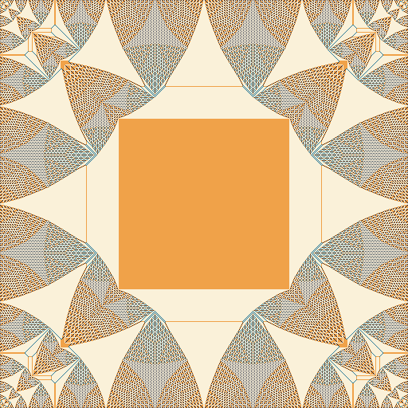
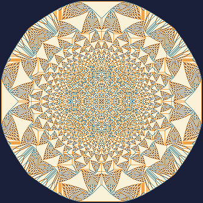

One absurdly simple rule. A hidden algebraic group. A fractal that no one designed. Drop some sand and see for yourself — every number we compute is reproduced by code you can re-run, and where the science is genuinely unsettled, the page says so.
Pick a square grid. On each cell sits a pile of sand grains. The only rule:
Keep applying the rule until no cell has 4 grains left. That’s it. From this kindergarten rule grows behaviour that occupied physicists and mathematicians for nearly 40 years. Let’s build it up, one surprise at a time — starting with the sandbox below.
Click anywhere on the grid to drop sand. When a pile hits 4, it spills into its neighbours, which may then spill into their neighbours — a chain reaction called an avalanche. Cells glowing hot are mid-topple.
Try: drop +1000 on one spot and watch a single tall pile collapse into a square crystal. Or “Fill near-critical”, then drop a single grain on the edge — sometimes nothing, sometimes a system-spanning cascade. Same trigger, wildly different outcome.
During an avalanche you often have several cells with ≥4 grains at once. Which do you topple first? Here’s the first surprise: it doesn’t matter. Whatever order you choose, you always reach the same final configuration — and even the same total number of topplings. Toppling here, then there, commutes. That is what “abelian” means.
The deep reason (Fey–Levine–Peres) is a least-action principle: each cell topples exactly the number of times it must, no more — a quantity called the odometer, fixed before you make a single choice.
The recurrent sand configurations (more on those in §4) form an algebraic group. Every group has an identity element — the “do nothing” element, the sandpile equivalent of zero. You would expect zero to be… an empty grid. It is not. On a square grid the identity is this:

e = stabilise(2·max − stabilise(2·max))
where max = every cell holding 3. [Creutz 1991; Le Borgne–Rossin 2002]Want to watch it appear? Compute the identity live for a chosen grid size:
Call a configuration recurrent if it keeps reappearing forever under random dropping (equivalently: it’s reachable from the fullest stable state — every cell at 3). These recurrent configurations form a finite commutative group: add two of them grain-by-grain, stabilise, and you land on a third. The identity of §3 is its zero.
Now the beautiful part. There’s a theorem (Dhar 1990, via Kirchhoff’s 1847 Matrix–Tree theorem):
“Grid + sink” = the n×n grid plus one extra sink vertex that every boundary cell drains into, so every cell has degree 4. (This is a larger count than spanning trees of the bare grid: for 3×3 it is 100 352, and it equals the spanning-tree count of the (n+1)×(n+1) grid — OEIS A007341.)
Three completely different ideas — sandpile dynamics, graph theory, and linear algebra — must give the same integer. We can test that, exactly, right here. The button below brute-forces every configuration and counts the recurrent ones (Dhar’s burning test), and independently computes the determinant. They should match to the digit.
The group order explodes as the grid grows (these are exact, from the determinant — verified against the brute-force count for n ≤ 3):
| grid n×n | order of the sandpile group = # spanning trees |
|---|---|
| 1 | 4 |
| 2 | 192 |
| 3 | 100 352 |
| 4 | 557 568 000 |
| 5 | 32 565 539 635 200 |
| 6 | 19 872 369 301 840 986 112 |
771868769433239091089639994092114636109932351369849908140560566890195224119674376688434376885576200637292320221406097981598115971326278197928402167888987269304829218867464941233248549137720632118871878270976
A 400×400 integer matrix’s determinant — equal to the number of ways to wire up a 20×20 grid (plus its sink) into a spanning tree, equal to the number of recurrent sand states.
Drive the pile gently: keep dropping single grains at random spots and let each avalanche finish. The system isn’t tuned to anything, yet it drifts on its own toward a delicate, “critical” state where a single grain can trigger an avalanche of almost any size. This is the famous idea Bak, Tang and Wiesenfeld introduced in 1987 — self-organised criticality (SOC).
Avalanche-size distribution, log–log (log-binned counts, not a normalised density; on these axes the slope ≈ 1−τ). A straight-ish line over several decades is the “scale-free” signature — but read §5’s caveat before trusting any single exponent.
Clean power laws live in the directed sandpile (Dhar–Ramaswamy 1989, exactly solved) and in the mean-field regime above the upper critical dimension (believed to be d = 4) — not in this 2D picture. So: scale-free and gorgeous, yes; “one tidy power law”, no.
Last experiment: empty grid, drop an enormous pile on a single centre cell, and stabilise. You get this:

As the number of grains → ∞ (with space rescaled), this picture has a genuine scaling limit (Pegden–Smart 2013) — but in a subtle sense: only local averages converge; the intricate microstructure never smooths out. The curved boundaries you see are explained by an Apollonian circle packing of certain integer matrices (Levine–Pegden–Smart 2016/2017). A pile of sand, computing an object from the theory of circle packings, with no one telling it to.
A one-line rule about sand gave us: order-independence (an abelian structure), a finite group whose size equals a spanning-tree count equals a determinant, a fractal “zero”, scale-free-but-multifractal avalanches, and a circle-packing in the continuum limit. Nothing here was designed in. It was discovered — and on this page, re-derived in front of you.
The simulations on this page run in your browser with the exact same toppling rule used to generate the figures. The figures and the brute-force checks come from a small Python module. Reproduce everything (abelian property, identity, recurrent = spanning-trees for n=1,2,3, group-order growth, avalanche stats):
It’s all in the open repository — clone it and re-run every number yourself:
github.com/rtmodb-rgb/curiosity-lab →
python3 code/sandpile/verify.py.
The brute-force recurrent count (Dhar’s burning test) and the determinant agree exactly for n = 1 (4), 2 (192), 3 (100352) — two independent methods, same integer.